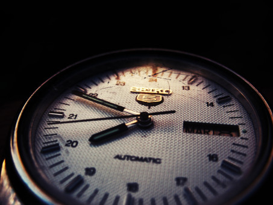

-------------------------------------------------------------------------------------------------------------------------------
SOBRE NÓS
-------------------------------------------------------------------------------------------------------------------------------

A Clock.to é uma empresa especializada no desenvolvimento e comercialização de relógios modernos, que unem design sofisticado, tecnologia de ponta e qualidade duradoura. Nosso propósito é oferecer mais do que um acessório: entregamos estilo, precisão e confiança para acompanhar cada momento da vida de nossos clientes.
Com foco na inovação, a Clock.to busca integrar tendências de moda com funcionalidades inteligentes, atendendo tanto ao público que valoriza a elegância clássica quanto aqueles que preferem soluções tecnológicas e contemporâneas.
Nosso compromisso é proporcionar uma experiência única, aliando beleza, conforto e funcionalidade, sempre priorizando materiais de alta qualidade e um acabamento impecável.
A Clock.to acredita que o tempo é o recurso mais valioso que temos. Por isso, nossa missão é ajudar as pessoas a aproveitarem cada segundo com estilo e confiança.
-------------------------------------------------------------------------------------------------------------------------------